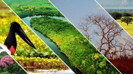
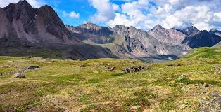
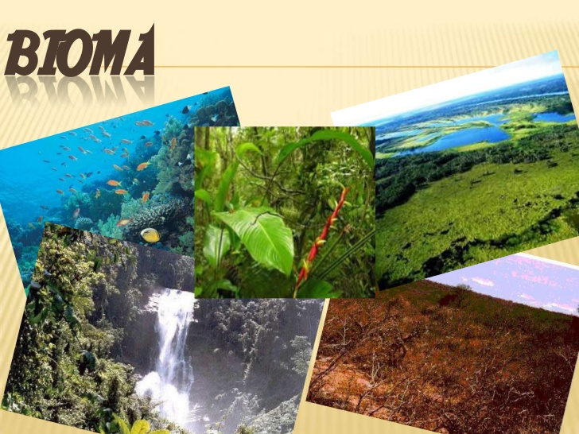

El ecosistema terrestre de la tundra es uno de los biomas más fríos sobre el planeta, lo que se deduce desde el concepto de su nombre que en realidad significa llanura sin árboles. El biomas tundra es muy frío!. Podemos decir que es prácticamente un desierto polar cuyas características principales son un clima sumamente frío, pocas precipitaciones, fuertes vientos, suelo bastante pobre en nutrientes, una baja diversidad biológica, la vegetación de estructura sencilla y baja donde las estaciones de crecimiento son cortas. El paisaje de la tundra es en realidad una capa de hielo y nieve qué cubre la mayor parte del terreno, suelos y monte. Los territorios de la tundra se ubican en las regiones polares y latitudes altas, principalmente en el hemisferio norte del planeta, y abarca regiones como Alaska, Siberia, Islandia, la parte sur de Groenlandia, en Europa la parte Norte incluyendo Rusia y Escandinavia, el norte de Canadá, el norte de la Antártida, las zonas altas entre Chile y Argentina, diferentes islas subantárticas. Las cimas también posee este bioma debido a esa escasez de precipitaciones, el clima frío y a unos vientos fuertes. A temperaturas tan bajas la tundra no dispone de árboles pero si tienen plantas de dimensiones bajas y hasta unas 400 especies de diferente vegetación con flores. Por las condiciones climatológicas y las pocas precipitaciones existe una falta de elementos orgánicos en descomposición que al final son nutrientes que alimentan la vegetación, así que esta la podemos encontrar más bien dispersa en el paisaje.
La necesidad de disponer de un sistema de clasificación de los biomas surgió después de la creación de los sistemas de clasificación de climas, que se basaban solamente en criterios meteorológicos como la pluviometría y la insolación. Las primeras clasificaciones bioclimáticas nacieron en la década de 1950 con la clasificación de Holdridge. Los sistemas de clasificación pioneros trataban de definir los biomas utilizando las mediciones climáticas. Después, en los años 1970 y 1980 se produjo un importante impulso para entender las relaciones entre estos parámetros y las propiedades energéticas de los ecosistemas, porque tales descubrimientos permitirían la predicción de las tasas de captura de energía y la transferencia entre los distintos componentes de los ecosistemas. Un estudio de ese tipo fue realizado por Sims et al. (1978) sobre las praderas de América del Norte. El estudio encontró una correlación positiva entre la evapotranspiración, en mm/año y la producción primaria neta por encima del suelo en g/m²/año. Otros resultados generales del estudio fueron que la precipitación y el uso del agua llevan a la producción primaria sobre el terreno; que la radiación solar y la temperatura llevan a una producción primaria subterránea (raíces); y que la temperatura y el agua llevan a hábitats de crecimiento estacional de temporada fría y caliente. Estos resultados ayudan a explicar las categorías utilizadas en el sistema de bioclasificación de Holdridge, que luego fueron simplificados en la de Whittaker.